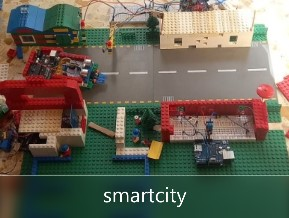

smartcity
cosa è una smartcity
Smart city: Una smart city (città intelligente) è una città che utilizza le tecnologie dell'informazione e della comunicazione (ICT) per migliorare la qualità della vita dei suoi cittadini, aumentare l'efficienza delle operazioni urbane e ridurre l'impatto ambientale.In una smart city, i sistemi e le infrastrutture sono connessi in rete e raccolgono e analizzano dati in tempo reale, al fine di fornire informazioni utili per migliorare la gestione delle risorse, l'efficienza energetica, la mobilità urbana, la sicurezza pubblica e altri servizi pubblici. Una smart city può includere una vasta gamma di tecnologie, come sensori, reti di comunicazione wireless, dispositivi mobili, big data, intelligenza artificiale,robotica, e sistemi di controllo intelligenti.
cosa si è fatto
- autovelox
- parcheggio smart
- giardino con sito per monitorare ambiente
- semaforo
- macchina con sensore di parcheggio
si è progettato 5 ambineti di una smartcity
relazione tecnica smartcity con tutte le specifiche